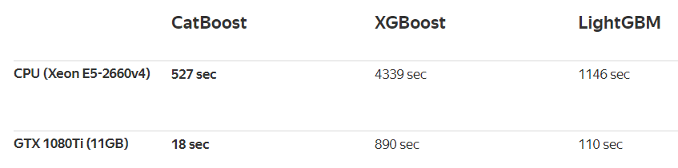
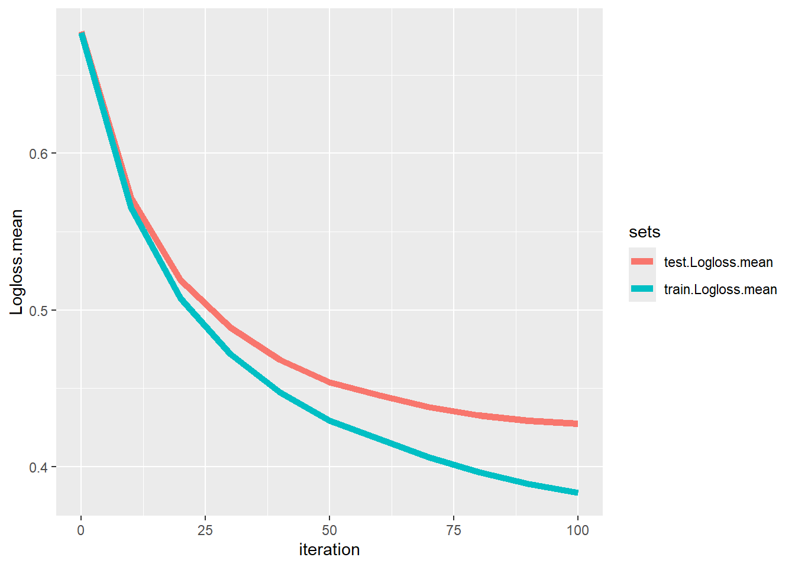
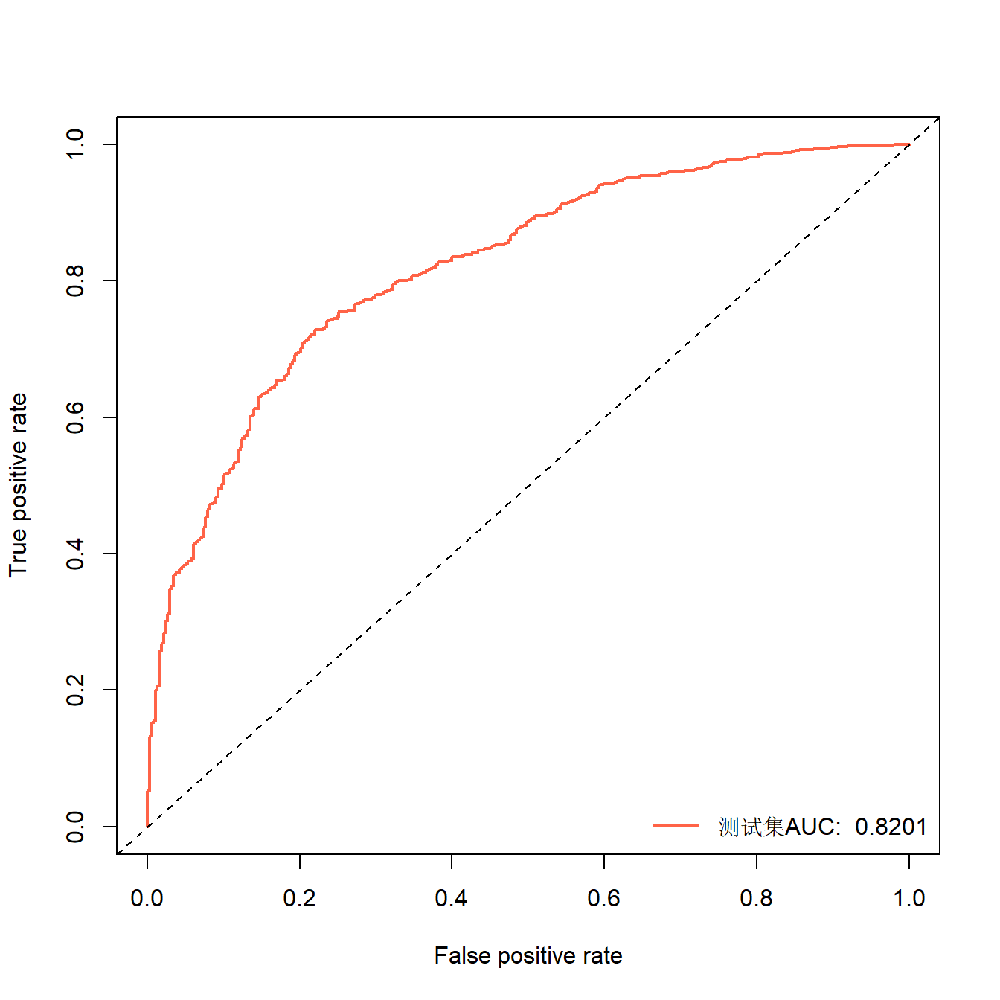
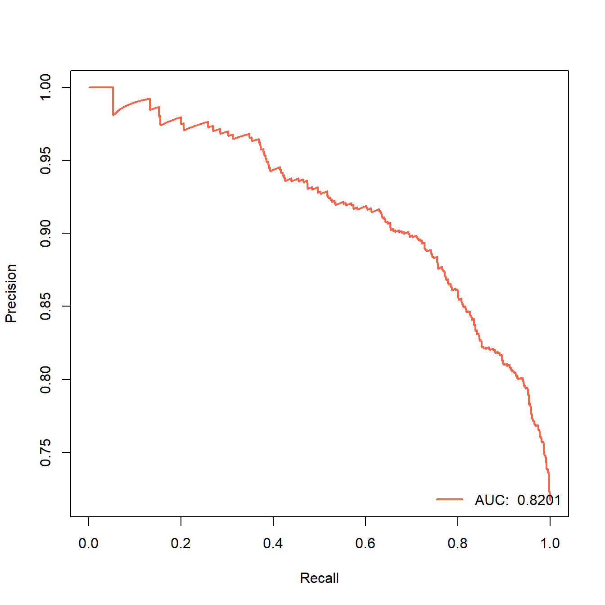
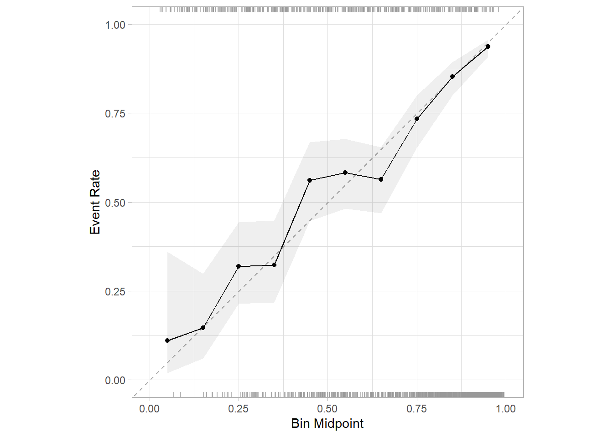

#install.packages('remotes')
remotes::install_url('https://github.com/catboost/catboost/releases/download/v1.2.5/catboost-R-windows-x86_64-1.2.5.tgz', INSTALL_opts = c("--no-multiarch", "--no-test-load"))24 catboost
CatBoost是一种基于决策树的梯度提升算法。它由Yandex（俄罗斯搜索巨头）研究人员和工程师开发，用于Yandex和其他公司（包括CERN、Cloudflare、Careem出租车）的搜索、推荐系统、个人助理、自动驾驶汽车、天气预报和许多其他任务。它是开源的，任何人都可以使用。提供Python、R、命令行等多种版本。
CatBoost和之前介绍过的XGBoost、LightGBM并称为GBDT的三大主流神器。
24.1 特性介绍
说实话官网介绍的这几个特性我觉得非常吸引我！
- 无需超参数调优即可得到高质量结果：CatBoost默认参数得到的模型就已经足够优秀，省去大量调优时间
- 不需要对分类变量重编码：多数模型都需要在运行前对分类变量进行一些预处理，比如虚拟变量转换等，但是CatBoost不需要这些操作！它会自动为你处理这些分类变量
- 支持GPU：这个没啥说的，其他算法也有
- 更高的准确率：过拟合的可能性更小，结果准确率更高
- 更快的速度：比比XGBoost和LightGBM更快
总结来说就是：CatBoost比XGBoost和LightGBM更准、更快、更牛逼！选CatBoost就对了！
看下官方给出的模型性能比较：

再看下速度对比，快了不是一点点！

24.2 安装
可以直接用以下代码在线安装，我写这篇推文时（2024.3.25）最新的版本是1.2.5，注意版本不要写错！这个算法的更新速度飞快，github一直在更新中，这也是我这么晚才介绍这个算法的原因之一。
不同平台的安装方式略有不同，可参考官网教程：https://catboost.ai/en/docs/installation/r-installation-binary-installation
下面是windows的安装方法，在线安装对网络有要求。
如果你网不行，那还是选择把安装包下载下来，本地安装，下载地址是：https://github.com/catboost/catboost/releases
注意选择合适的版本，注意路径不要写错：
remotes::install_local("E:/R/R包/catboost-R-windows-x86_64-1.2.5.tgz")24.3 快速上手
首先加载数据和R包。
library(catboost)数据就用著名的德国信用评分数据。这个数据一共有4454行，14列，其中Status是结果变量，二分类，因子型，good表示信用评分好，bad表示信用评分差，其余列是预测变量，预测变量既有数值型也有分类型，分类型的都是factor。并且这个数据有部分缺失值。
library(modeldata)
data("credit_data")
dim(credit_data)
## [1] 4454 14
str(credit_data)
## 'data.frame': 4454 obs. of 14 variables:
## $ Status : Factor w/ 2 levels "bad","good": 2 2 1 2 2 2 2 2 2 1 ...
## $ Seniority: int 9 17 10 0 0 1 29 9 0 0 ...
## $ Home : Factor w/ 6 levels "ignore","other",..: 6 6 3 6 6 3 3 4 3 4 ...
## $ Time : int 60 60 36 60 36 60 60 12 60 48 ...
## $ Age : int 30 58 46 24 26 36 44 27 32 41 ...
## $ Marital : Factor w/ 5 levels "divorced","married",..: 2 5 2 4 4 2 2 4 2 2 ...
## $ Records : Factor w/ 2 levels "no","yes": 1 1 2 1 1 1 1 1 1 1 ...
## $ Job : Factor w/ 4 levels "fixed","freelance",..: 2 1 2 1 1 1 1 1 2 4 ...
## $ Expenses : int 73 48 90 63 46 75 75 35 90 90 ...
## $ Income : int 129 131 200 182 107 214 125 80 107 80 ...
## $ Assets : int 0 0 3000 2500 0 3500 10000 0 15000 0 ...
## $ Debt : int 0 0 0 0 0 0 0 0 0 0 ...
## $ Amount : int 800 1000 2000 900 310 650 1600 200 1200 1200 ...
## $ Price : int 846 1658 2985 1325 910 1645 1800 1093 1957 1468 ...先按照7：3划分个训练集和测试集：
set.seed(6354)
ind <- sample(1:nrow(credit_data),0.7*nrow(credit_data))
train <- credit_data[ind,]
test <- credit_data[-ind,]
dim(train)
## [1] 3117 14
dim(test)
## [1] 1337 1424.3.1 数据准备
与XGBoost和LightGBM一样，CatBoost在使用时也需要专用的格式，也使用专用的函数进行封装。
封装前也是要把预测变量和结果变量单独拿出来，不能放一起，结果变量必须用数字1和0表示，分类变量建议使用因子型，计算时会自动进行预处理，然后使用catboost.load_pool()函数进行封装：
features <- train[,-1]
labels <- ifelse(train$Status == "good",1,0)
train_pool <- catboost.load_pool(data = features,label = labels)
train_pool
## catboost.Pool
## 3117 rows, 13 columns24.3.2 训练模型
封装好之后就可以提供给算法进行学习了，使用的函数是catboost.train()：
model <- catboost.train(train_pool, NULL,
params = list(loss_function = 'Logloss', # 损失函数
iterations = 100, # 100棵树
metric_period=10 # 每10棵树计算1次指标
#prediction_type=c("Class","Probability")
)
)
## Learning rate set to 0.13828
## 0: learn: 0.6445127 total: 192ms remaining: 19s
## 10: learn: 0.4703331 total: 350ms remaining: 2.83s
## 20: learn: 0.4236971 total: 463ms remaining: 1.74s
## 30: learn: 0.4003478 total: 585ms remaining: 1.3s
## 40: learn: 0.3891287 total: 690ms remaining: 992ms
## 50: learn: 0.3798819 total: 799ms remaining: 768ms
## 60: learn: 0.3711200 total: 908ms remaining: 581ms
## 70: learn: 0.3646432 total: 1.01s remaining: 415ms
## 80: learn: 0.3577685 total: 1.12s remaining: 262ms
## 90: learn: 0.3532076 total: 1.22s remaining: 121ms
## 99: learn: 0.3474675 total: 1.32s remaining: 0us24.3.3 查看结果
默认的结果，平平无奇：
model
## CatBoost model (100 trees)
## Loss function: Logloss
## Fit to 13 feature(s)获取变量重要性：
catboost.get_feature_importance(model)
## [,1]
## Seniority 13.704942
## Home 4.409678
## Time 4.220234
## Age 2.819654
## Marital 1.347322
## Records 11.865015
## Job 10.489621
## Expenses 4.141522
## Income 16.671911
## Assets 7.982805
## Debt 2.387191
## Amount 13.280631
## Price 6.679474查看模型的各种参数：
# 太长不放出来了
catboost.get_model_params(model)24.4 交叉验证
正式使用的时候肯定是要用交叉验证或者bootstrap这种重抽样方法的，此时可以用catboost.cv()：
model_cv <- catboost.cv(train_pool, fold_count = 5, # 5折交叉验证
params = list(loss_function = 'Logloss', # 损失函数
iterations = 100, # 100棵树，默认是1000
metric_period=10 # 每10棵树计算1次指标
,verbose=0 # 减少日志输出
,random_seed=1234
)
)
## Training on fold [0/5]
##
## bestTest = 0.4371081209
## bestIteration = 99
##
## Training on fold [1/5]
##
## bestTest = 0.4414686541
## bestIteration = 99
##
## Training on fold [2/5]
##
## bestTest = 0.3944321369
## bestIteration = 99
##
## Training on fold [3/5]
##
## bestTest = 0.4309943666
## bestIteration = 99
##
## Training on fold [4/5]
##
## bestTest = 0.4337864039
## bestIteration = 99结果有11行，分别是分析集和评估集（这个概念不懂的请参考tidymodels-rsample：数据划分）的模型指标，因为我们设置的是每10棵树计算1次指标，一共有100棵树，所以有11行，如果改成每20棵树计算一次，就是有6行：
model_cv
## test.Logloss.mean test.Logloss.std train.Logloss.mean train.Logloss.std
## 1 0.6776724 0.001077025 0.6769152 0.001407418
## 2 0.5717982 0.005433284 0.5655896 0.002684553
## 3 0.5189984 0.006360272 0.5075464 0.004846065
## 4 0.4890277 0.009908884 0.4719268 0.005552004
## 5 0.4681056 0.012011841 0.4474683 0.005473089
## 6 0.4540802 0.012673318 0.4295447 0.005890671
## 7 0.4454735 0.014272786 0.4175673 0.005970905
## 8 0.4380360 0.015334895 0.4058692 0.006510348
## 9 0.4329628 0.016470751 0.3966050 0.006976306
## 10 0.4294426 0.017505843 0.3890955 0.007753856
## 11 0.4275579 0.018925086 0.3832895 0.007536350给你顺手画个图，看看迭代次数（也就是树的数量）和模型性能的关系：
library(ggplot2)
library(tidyr)
library(dplyr)
model_cv %>% mutate(iteration = (row_number()-1)*10) %>%
pivot_longer(cols = c(1,3),names_to = "sets",values_to = "Logloss.mean") %>%
ggplot(., aes(iteration,Logloss.mean))+
geom_line(aes(group=sets,color=sets),linewidth=2)
树越多越准确哈，但是太多了容易过拟合。
24.5 新数据预测
这样这个模型就训练好了，下面就可以对新的数据进行预测了。
预测前也是需要先用catboost.load_pool()把数据封装起来，然后使用catboost.predict()即可：
test_pool <- catboost.load_pool(test[,-1])
# 预测类别概率
pred_prob <- catboost.predict(model, test_pool, prediction_type = "Probability")
head(pred_prob)
## [1] 0.4514856 0.9225333 0.1778611 0.9073103 0.9636420 0.3190501二分类数据支持以下预测类型：
- Probability
- Class
- RawFormulaVal
- Exponent
- LogProbability
- VirtEnsembles
- TotalUncertainty
使用起来毫无难度，是不是很easy呢？
24.6 模型评价
模型评价还是那一套，混淆矩阵、准确率、敏感度、特异度、ROC曲线等等。我们需要的就是拿到模型的预测结果就好了，分类变量的结果有2种：预测类别或者预测的某种类别的概率。
有些模型只能给出其中1种，有的模型都能给，比如catboost。
获取测试集的预测概率和类别：
# 预测类别
pred_status <- catboost.predict(model, test_pool, prediction_type = "Class")
# 得把1，0这种再变回去才好比较
pred_status <- ifelse(pred_status==1,"good","bad")
# 再变成因子型，得和原始数据保持一致
levels(test$Status)
## [1] "bad" "good"
pred_status <- factor(pred_status,levels = levels(test$Status))
head(pred_status)
## [1] bad good bad good good bad
## Levels: bad good24.6.1 混淆矩阵
借助caret查看混淆矩阵，这个功能是目前R里面最强大的，没有对手：
caret::confusionMatrix(pred_status,test$Status, mode="everything")
## Confusion Matrix and Statistics
##
## Reference
## Prediction bad good
## bad 180 98
## good 198 861
##
## Accuracy : 0.7786
## 95% CI : (0.7554, 0.8006)
## No Information Rate : 0.7173
## P-Value [Acc > NIR] : 2.014e-07
##
## Kappa : 0.4066
##
## Mcnemar's Test P-Value : 8.702e-09
##
## Sensitivity : 0.4762
## Specificity : 0.8978
## Pos Pred Value : 0.6475
## Neg Pred Value : 0.8130
## Precision : 0.6475
## Recall : 0.4762
## F1 : 0.5488
## Prevalence : 0.2827
## Detection Rate : 0.1346
## Detection Prevalence : 0.2079
## Balanced Accuracy : 0.6870
##
## 'Positive' Class : bad
## 24.6.2 ROC曲线
画个ROC曲线，就用ROCR包吧，3步走：
library(ROCR)
pred <- prediction(pred_prob,test$Status) # 预测概率，真实类别
perf <- performance(pred, "tpr","fpr")
auc <- round(performance(pred, "auc")@y.values[[1]],digits = 4)
#auc
plot(perf,lwd=2,col="tomato")
abline(0,1,lty=2)
legend("bottomright", legend=paste("测试集AUC: ",auc), col="tomato", lwd=2,bty = "n")
AUC是0.82以上，结果还可以，但是要注意这个是good的AUC哦。
24.6.3 PR曲线
顺手再画个PR曲线吧，这个曲线很常见，但是在我之前的推文中画的不是很多，其实也很简单的，还是用ROCR就可以画，横坐标是查全率（recall，也叫召回率、灵敏度、真阳性率），纵坐标是查准率（precision，又叫精确率）。
library(ROCR)
pred <- prediction(pred_prob,test$Status) # 预测概率，真实类别
perf <- performance(pred, "prec","rec")
auc <- round(performance(pred, "auc")@y.values[[1]],digits = 4)
plot(perf,lwd=2,col="tomato")
legend("bottomright", legend=paste("AUC: ",auc), col="tomato", lwd=2,bty = "n")
这个就是PR曲线，它的曲线下面积也是AUC（area under the curve），只不过这个是PR-AUC，上面的那个是ROC-AUC。
24.6.4 校准曲线
公众号后台回复校准曲线可获取合集，查看各种各样的校准曲线绘制，我这里给大家介绍最新的方法（其实之前也介绍过了），用probably这个包绘制：
library(probably)
## Warning: package 'probably' was built under R version 4.3.3
library(dplyr)
test %>% select(Status) %>%
bind_cols(.pred_good = pred_prob) %>%
cal_plot_breaks(Status, .pred_good,event_level = "second",conf_level = 0.95)
但是目前这个版本（1.0.3）有个bug，第3个参数estimate，必须是.pred_xxx，其中的xxx必须是真实结果中的某一个类别，比如我这个数据Status中的类别就是good和bad，那么这个名字就必须是.pred_good或者.pred_bad，其他都会报错（下标出界）！！
24.6.5 决策曲线
顺手再画个决策曲线，这个决策曲线是临床预测模型中才有的内容，其他内容基本上都是机器学习的基础知识。公众号后台回复决策曲线即可获取合集：
source("datasets/dca.r")
# 需要真实结果和预测概率
dca_data <- data.frame(truth_status = test$Status, pred_prob = pred_prob)
# 结果变量变成0，1
dca_data$truth_status <- ifelse(dca_data$truth_status == "good",1,0)
dc <- dca(data = dca_data, # 测试集
outcome = "truth_status",
predictors = "pred_prob",
probability = T
)
太简单！
前几年stdca.r和dca.r这两个脚本是可以在网络中免费下载的，但是从2022年底左右这个网站就不提供这两段代码的下载了。因为我很早就下载好了，所以我把这两段代码放在粉丝qq群文件里，大家有需要的加群下载即可。当然我还介绍了很多其他方法，公众号后台回复决策曲线即可获取合集。
24.6.6 训练集指标
有的时候写文章还需要同时写上训练集的各种指标，很简单，把数据换成训练集即可得到训练集的结果：
pred_status <- catboost.predict(model, train_pool, # 这里写训练集
prediction_type = "Class")
pred_prob <- catboost.predict(model, train_pool,
prediction_type = "Probability")
pred_status <- ifelse(pred_status==1,"good","bad")
pred_status <- factor(pred_status,levels = levels(train$Status))
# 混淆矩阵
caret::confusionMatrix(train$Status, pred_status, mode="everything")
## Confusion Matrix and Statistics
##
## Reference
## Prediction bad good
## bad 546 330
## good 138 2103
##
## Accuracy : 0.8499
## 95% CI : (0.8368, 0.8622)
## No Information Rate : 0.7806
## P-Value [Acc > NIR] : < 2.2e-16
##
## Kappa : 0.6019
##
## Mcnemar's Test P-Value : < 2.2e-16
##
## Sensitivity : 0.7982
## Specificity : 0.8644
## Pos Pred Value : 0.6233
## Neg Pred Value : 0.9384
## Precision : 0.6233
## Recall : 0.7982
## F1 : 0.7000
## Prevalence : 0.2194
## Detection Rate : 0.1752
## Detection Prevalence : 0.2810
## Balanced Accuracy : 0.8313
##
## 'Positive' Class : bad
## ROC曲线和PR曲线也是一样的画，这里只演示下ROC：
library(ROCR)
pred <- prediction(pred_prob,train$Status) # 预测概率，真实类别
perf <- performance(pred, "tpr","fpr")
auc <- round(performance(pred, "auc")@y.values[[1]],digits = 4)
#auc
plot(perf,lwd=2,col="tomato")
abline(0,1,lty=2)
legend("bottomright", legend=paste("训练集AUC: ",auc), col="tomato", lwd=2,bty = "n")
有点过拟合了，不过还可以，一般来说训练集肯定是要比测试集高一点的，因为这种方法并不正规，你把训练用的数据重新给模型预测，这样属于“泄题行为”~。
24.7 参数介绍
catboost.load_pool的参数没啥特殊的，主要的作用就是封装数据，大家可以看下帮助文档。与catboost.load_pool对应的还有个catboost.save_pool是用来保存数据的，保存的格式也是CatBoost支持的格式，看名字也知道有点类似于R中的save()和load()。
重点说下catboost.train()的参数。catboost.train()说起来只有3个参数：
learn_pool：用来训练模型的数据test_pool：测试数据，用来防止过拟合的，默认值是NULL，即不使用params：这个才是最重要的参数，里面是一个列表，包括了非常多的超参数
但是呢也不要害怕，因为CatBoost的优势之一就是使用默认的参数即可获得非常棒的结果，所以如果你不是非常懂这些参数，不要随便改，你改的可能还不如默认的好。
另外就是这些参数虽然非常多（大概数了下竟然有78个！），但是多数参数都是和树模型有关的参数以及和提升算法有关的参数，比如树的数量、树的深度等等。剩下的参数就是一些控制输出的、控制日志的、和catboost算法本身有关的等等。
大家使用时真正需要调整的可能还是损失函数、学习率、树的数量、输的深度等这种参数。这一点可以和XGBoost和LightGBM对照着学习。
24.8 超参数调优
如果你要进行超参数调优，可以借助caret、mlr3进行，你需要学习下这几个包的使用语法，然后换上CatBoost这个“引擎”即可，使用语法没有任何特别之处，公众号后台回复关键词即可获取相关合集，这里就不再重复了。
tidymodels目前并不支持CatBoost，目前看来还是遥遥无期，原因看这里：R语言lightGBM超参数调优
24.9 模型解释
所有的模型解释都可以使用DALEX及其扩展包实现，而且只需要3行代码即可，使用语法也都是统一的，公众号后台回复模型解释即可获取合集。